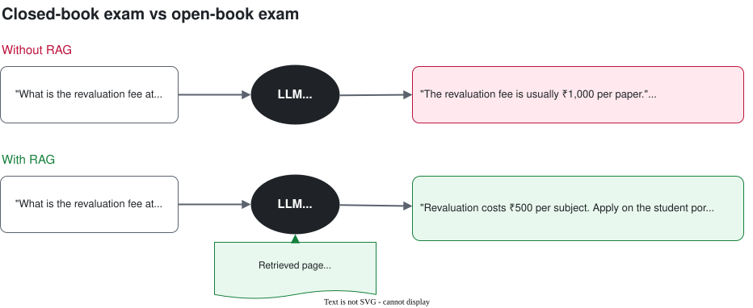
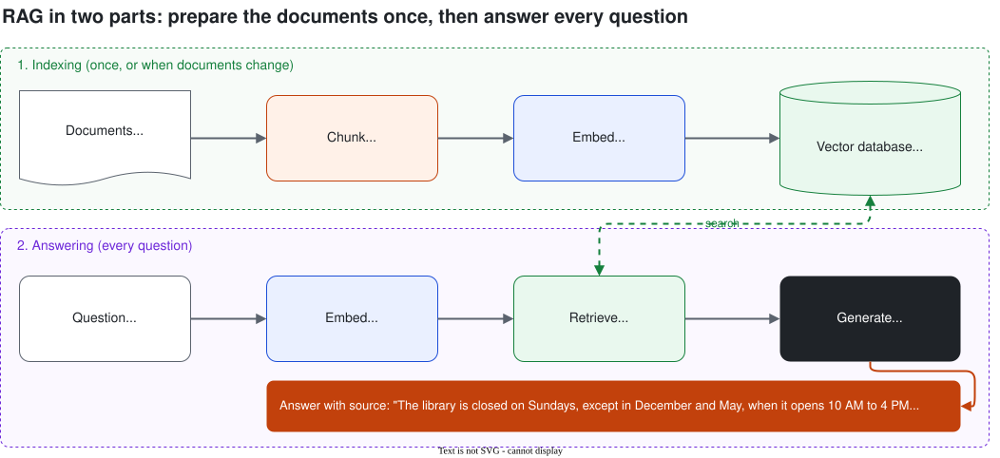
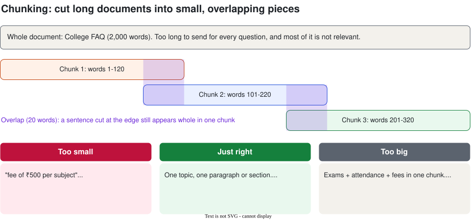

RAG: Retrieval-Augmented Generation
An LLM doesn't know your college's rules, timetable or syllabus. RAG fixes that: before answering, it looks up the right page in your documents and answers from it, with the source.
- The problem: the model doesn't know your documents
- What RAG is: an open-book exam
- The RAG pipeline in six steps
- Step 1: Load
- Step 2: Chunk
- Step 3: Embed
- Step 4: Store in a vector database
- Step 5: Retrieve
- Step 6: Generate with citations
- When RAG goes wrong, and how to fix it
- How to test a RAG bot
- Lab: chat with the college FAQ
- Recap, quiz and glossary
1. The problem: the model doesn't know your documents
Ask any chatbot "What is the revaluation fee at our college?" and it can't know. Your college's rules were never in its training data, and even if similar text was, it might be out of date. So it either says "I don't know" or, worse, makes something up (Session 1: hallucination).

There are three ways to give a model your information:
| Option | How | Problem |
|---|---|---|
| Paste everything | Put the whole document in every prompt | Fine for 2 pages. For 500 pages: too many tokens, slow, expensive, may not fit the context window. |
| Fine-tune | Train the model further on your documents | Costly, needs skills, and must be redone every time a rule changes. Still can hallucinate. |
| RAG ✅ | Search your documents, send only the few relevant pieces | Needs some setup, which is what this session is about. |
2. What RAG is: an open-book exam
RAG stands for Retrieval-Augmented Generation:
- Retrieval: find the pieces of your documents that match the question.
- Augmented: add those pieces to the prompt.
- Generation: the LLM writes the answer using them.
3. The RAG pipeline in six steps
RAG has two parts. Indexing prepares your documents once (and again whenever they change). Answering runs for every question.

4. Step 1: Load
First, get your documents into plain text. Common sources: PDFs (syllabus, rules), web pages (college website), Word files, Google Docs, or a database.
# Read a PDF page by page
from pypdf import PdfReader
reader = PdfReader("syllabus.pdf")
pages = [page.extract_text() for page in reader.pages]
print(len(pages), "pages")
print(pages[0][:300])5. Step 2: Chunk
We don't search the whole document as one block. We cut it into chunks: small pieces, each about one topic. Then we can send the model only the 2–3 chunks it needs.

- Chunk size: start with about 100–300 words (roughly 150–400 tokens).
- Overlap: repeat about 10–20% between neighbouring chunks, so a sentence cut at the edge still appears whole somewhere.
- Split on structure when you can: by heading, section or paragraph. A chunk that is exactly "the Library section" is better than one that's half Library, half Placements.
- Keep the source with each chunk (file name, page, section). You'll need it for citations.
def chunk_text(text, size=120, overlap=20):
words = text.split()
chunks, step = [], size - overlap
for start in range(0, len(words), step):
chunks.append(" ".join(words[start:start + size]))
if start + size >= len(words):
break
return chunksLibraries like LangChain and LlamaIndex have ready-made "text splitters" that do the same thing with more options. Writing your own once helps you understand what they do.
6. Step 3: Embed
Remember embeddings from Session 1: text turned into a list of numbers so that similar meanings are close together. We embed every chunk once.
from sentence_transformers import SentenceTransformer
embedder = SentenceTransformer("all-MiniLM-L6-v2") # small, free, runs in Colab
vectors = embedder.encode(chunks, normalize_embeddings=True)
print(vectors.shape) # (number of chunks, 384)Embedding model options: free local models (like all-MiniLM-L6-v2, or multilingual ones for Hindi, Kannada and Tamil), or API models from Google, OpenAI and others. Local is free and has no rate limits; API models are often more accurate.
7. Step 4: Store in a vector database
A vector database stores each chunk's vector together with its text and source, and can quickly find the vectors closest to a question, even among millions.
| Option | What it is | Good for |
|---|---|---|
| Chroma | Simple open-source vector DB, runs inside Python | Learning, prototypes, small apps (we use it today) |
| FAISS | Fast similarity-search library from Meta | Large collections on your own machine |
| pgvector | Vector search inside PostgreSQL | Apps that already use Postgres |
| Managed | Pinecone, Weaviate, or cloud services (Vertex AI Vector Search, Azure AI Search, Amazon OpenSearch / Bedrock Knowledge Bases) | Production: scaling, backups, security handled for you |
import chromadb
db = chromadb.Client()
col = db.create_collection("college_faq")
col.add(
ids=["Library-0", "Exams-0"],
documents=[library_text, exams_text],
metadatas=[{"source": "Library"}, {"source": "Exams"}],
embeddings=embedder.encode([library_text, exams_text], normalize_embeddings=True).tolist(),
)8. Step 5: Retrieve
When a question comes in, embed it with the same model and ask the database for the top-k closest chunks (usually k = 3 to 5).
q_vec = embedder.encode(["Is the library open on Sunday?"], normalize_embeddings=True).tolist()
res = col.query(query_embeddings=q_vec, n_results=3)
print(res["metadatas"][0]) # [{'source': 'Library'}, ...]| Question | Top chunk found |
|---|---|
| Is the library open on Sunday? | [Library] "...closed on Sundays, except during exam months..." |
| Can I sit for more drives after a 7 LPA offer? | [Placements] "...one-student-one-job policy..." |
| Who won the IPL in 2020? | Nothing relevant: all similarity scores are low |
Use a minimum similarity score: if even the best chunk scores low, the answer probably isn't in your documents, so don't send junk to the model.
9. Step 6: Generate with citations
Now we build a prompt (Session 2!) with three parts: rules, the retrieved chunks labelled with their source, and the question.
SYSTEM = """You are CampusBuddy, the helpdesk assistant for ABC Engineering College.
Answer the student's question using ONLY the context below.
- After each fact, cite the source in square brackets, like [Exams].
- If the answer is not in the context, say: "I couldn't find that in the
college documents. Please contact office@abc.edu."
- Keep the answer under 80 words, in simple English."""
context = "\n\n".join(f"[{h['source']}] {h['text']}" for h in hits)
prompt = f"Context:\n{context}\n\nQuestion: {question}"
resp = client.models.generate_content(
model=MODEL, contents=prompt,
config=types.GenerateContentConfig(system_instruction=SYSTEM, temperature=0),
)Q: My attendance in DBMS is 70%. Can I still write the exam?
A: You need 75% to get a hall ticket [Exams]. With 70%, you can apply for condonation with a medical certificate and a ₹1,000 fee; the principal decides [Attendance].
Two sources, combined into one answer, and you can check both.Why citations matter: students (and you) can check the answer, and it's easy to spot when the bot used the wrong chunk. "Only use the context" plus "say you couldn't find it" is your main defence against hallucination.
10. When RAG goes wrong, and how to fix it
Most RAG bugs are retrieval bugs, not LLM bugs. Always look at which chunks were retrieved first.
| Symptom | Likely cause | Fix |
|---|---|---|
| Answer is wrong or vague | The right chunk wasn't retrieved | Print the retrieved chunks. Try different chunk size, more k, better splitting. |
| Says "not found" but it's in the document | Text didn't load (scanned PDF, table), or score threshold too high | Check the extracted text. Lower the threshold. |
| Answers questions outside the documents | Prompt doesn't restrict it | "ONLY use the context" + minimum score. |
| Old information | Documents changed, index didn't | Re-index when documents are updated. |
| Exact codes or names not found (e.g. "CS301") | Embeddings match meaning, not exact words | Hybrid search: combine keyword search with vector search. |
Going further: re-ranking (a second model re-orders the top 20 chunks), query rewriting (rephrase the question before searching), and metadata filters (search only the 3rd-semester syllabus). You don't need these to start.
11. How to test a RAG bot
Don't just try two questions and call it done. Make a small test set:
- Write 10–20 real questions students ask, with the section where the answer is.
- Test retrieval: is the right section in the top 3? Count the hit rate.
- Test answers: is the answer correct, and is the citation right?
- Include 3–4 questions that are not in the documents. The bot should refuse them.
- Re-run the test set every time you change chunk size, k, the prompt or the model.
This is your first taste of evaluation, which we cover properly in Session 9.
12. Lab: chat with the college FAQ (45 min)
Build CampusBuddy-RAG over a sample FAQ for a fictional college: exams, attendance, fees, hostel, library, placements, scholarships and clubs. Then try it on your own college's PDF.
- Ask Gemini about the college with no documents. Watch it guess.
- Load the FAQ and chunk it (by word count, then by heading).
- Embed the chunks and search by meaning with NumPy: RAG from scratch.
- Store the chunks in Chroma and retrieve the top 3.
- Generate answers with citations, and refuse questions not in the FAQ.
- Measure the retrieval hit rate on 8 test questions.
- Chat with it.
13. Recap
- LLMs don't know your private or recent documents, so they guess.
- RAG = look up the right pieces, add them to the prompt, then answer. An open-book exam.
- Indexing (once): load → chunk → embed → store.
- Answering (every question): embed the question → retrieve top-k → generate.
- Chunks of ~100–300 words with 10–20% overlap; split by section when you can; keep the source.
- Same embedding model for chunks and questions.
- Prompt: "use ONLY the context", cite sources, say when it's not found.
- Most RAG bugs are retrieval bugs. Test with a question set.
Quick quiz
1. What do the R, A and G in RAG stand for?
Retrieval (find relevant chunks), Augmented (add them to the prompt), Generation (the LLM writes the answer).2. Why not just paste the whole 500-page syllabus into every prompt?
Too many tokens: expensive, slow, may not fit the context window, and models can miss details in very long inputs.3. Why do chunks overlap?
So that a sentence or idea cut at a chunk boundary still appears complete in at least one chunk.4. You embedded the chunks with model A and the questions with model B. What happens?
Retrieval breaks: the vectors are on different "maps" and the similarity scores are meaningless.5. The bot says "not found" for a question whose answer is in a scanned PDF. Why?
A scanned PDF is an image;pypdf extracts no text, so nothing was indexed. It needs OCR first.6. Your bot gives a wrong answer. What's the first thing to check?
Which chunks were retrieved. If the right chunk isn't there, fix retrieval (chunking, k, threshold) before touching the prompt or model.7. Name two things you'd put in a RAG system prompt.
Any two of: use only the context; cite the source for each fact; say "not found" if it isn't in the context; keep answers short.Glossary
| Term | Meaning in one line |
|---|---|
| RAG | Retrieve relevant document pieces, add them to the prompt, then generate the answer. |
| Indexing | Preparing documents for search: load, chunk, embed, store. |
| Chunk | A small piece of a document, usually one topic. |
| Overlap | Words repeated between neighbouring chunks. |
| Embedding model | The model that turns text into vectors. |
| Vector database | A database that stores vectors and finds the closest ones fast. |
| Top-k | The k most similar chunks returned for a question. |
| Similarity score | How close two vectors are in meaning (higher = closer). |
| Citation / grounding | Linking each fact in the answer to the chunk it came from. |
| Hybrid search | Combining keyword search with vector search. |
| Re-ranking | Re-ordering retrieved chunks with a second, more careful model. |
| OCR | Optical Character Recognition: reading text from images or scans. |
Learn more (free)
- Lewis et al., Retrieval-Augmented Generation for Knowledge-Intensive NLP Tasks (2020), the original RAG paper
- Chroma documentation, Getting started (docs.trychroma.com)
- Sentence Transformers documentation, Semantic search (sbert.net)
- LangChain and LlamaIndex RAG tutorials, once you've built one by hand
Instructor guide
Suggested plan for the 2 hours, with a short break. Press S in the slides to open speaker notes.
| Time | Segment | What to do |
|---|---|---|
| 0–10 min | Hook | Live: ask a chatbot "What is the revaluation fee at ABC College?" It guesses. Show the with/without diagram. Ask: how would you fix this? |
| 10–20 min | Three options + what RAG is | Paste vs fine-tune vs RAG. Open-book exam analogy. Pipeline diagram. |
| 20–40 min | Load, chunk, embed | Show a messy PDF extraction. Chunking diagram: ask the class to pick a chunk size for the syllabus. Recap embeddings from Session 1. |
| 40–55 min | Store, retrieve, generate | Vector DB options. Live retrieval in the notebook (Steps 4–6). Point at the citations. |
| 55–65 min | Break | Students start the first install cell so it's ready after the break. |
| 65–75 min | Problems + testing | Symptom table. "Print the retrieved chunks first." Show the evaluation cell. |
| 75–115 min | Lab | Pairs work through the notebook. Fast pairs: upload a real college PDF (stretch 1). Collect the best hit rates. |
| 115–120 min | Recap + quiz | Quiz questions 1, 4 and 6. Preview Day 2: turning CampusBuddy into an agent that can use tools. |